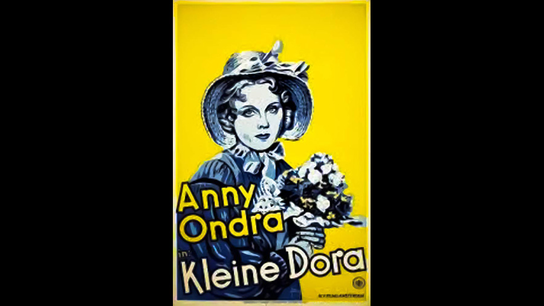

| Character | Actor |
|---|---|
| Mrs. Clenman | Antonie Jaeckel |
| Arthur Clenman | Mathias Wieman |
| Amy Dorrit | Anny Ondra |
| Lily (Fanny) Dorrit | Hilde Hildebrand |
| Pit (Tip) Dorrit | Kurt Meisel |
| William Dorrit | Gustav Waldau |
| John Chivery | Josef Eichheim |
| Merdle | Otto Stoeckel |
| Flintwinch | Fritz Rasp |
| Role | Person |
|---|---|
| Director | Carl Lamac |
| Screenplay | Curt J. Braun |